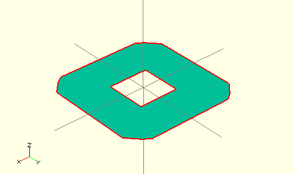

Using the projection() function, you can create 2d drawings from 3d models, and export them to the dxf format. It works by projecting a 3D model to the (x,y) plane, with z at 0. If cut=true, only points with z=0 are considered (effectively cutting the object), with cut=false(the default), points above and below the plane are considered as well (creating a proper projection).
Example: Consider example002.scad, that comes with OpenSCAD.

Then you can do a 'cut' projection, which gives you the 'slice' of the x-y plane with z=0.
projection(cut = true) example002();
You can also do an 'ordinary' projection, which gives a sort of 'shadow' of the object onto the xy plane.
projection(cut = false) example002();

Another Example
You can also use projection to get a 'side view' of an object. Let's take example002, and move it up, out of the X-Y plane, and rotate it:
translate([0,0,25]) rotate([90,0,0]) example002();
Now we can get a side view with projection()
projection() translate([0,0,25]) rotate([90,0,0]) example002();
Links:
Created with the Personal Edition of HelpNDoc: Full-featured Help generator